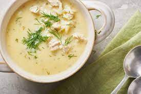

This is the most popular of Greek soups. The name means 'egg and lemon', the two most important ingredients that produce this light and nourishing soup. Orzo is a Greek rice-shaped pasta, but you can use any small shape. Garnish with fresh lemon slices.
